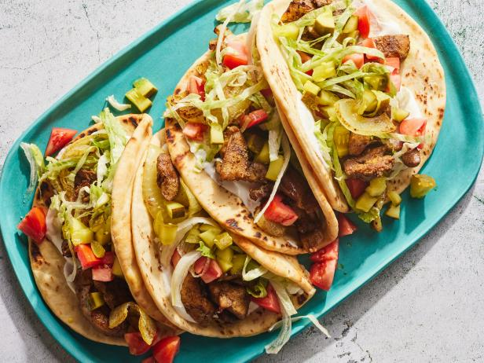

Shawarma

This is a traditional Medditerian recipe prepared by searing marinated chicken over live flame and wrapped in Pita bread.
People also have an option of having salad with Chicken.
This dish is also served without Pita bread or Pita on the side and is called Naked Shawarma.
Ingredients
- 500 gram Chicken
- Yogurt
- Turmeric Powder
- Shawarma Powder
- Lettuce
- Pickles
- Tomatos
- Vegetable oil
- Pita bread
Steps
- Cut the Chicken in small pieces
- Wash the chicken and soak dry
- Marinate the chicken with yogurt and speices
- Let the marination sit for 20 minutes
- After 20 mins, on a pan put 100 ml Vegetable oil
- Fry the marination mixture for 10 minutes
- Prepare the Pita bread untill chicken gets cooked by addign salad on top of it
- After chicken is prepared, put the chicken on Pita bread and enjoy